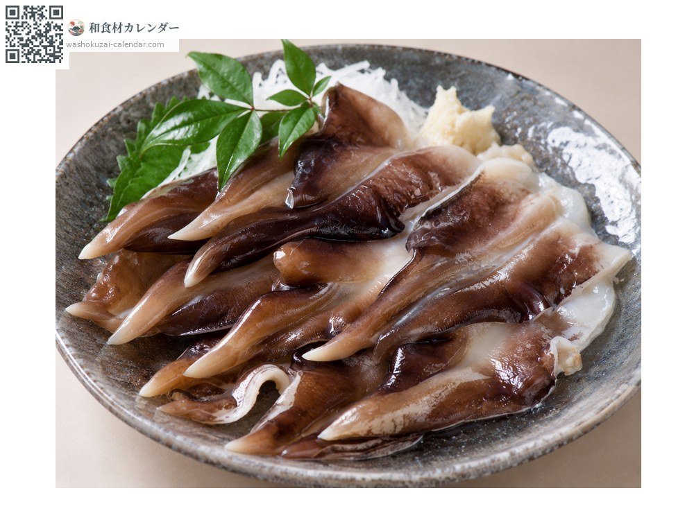
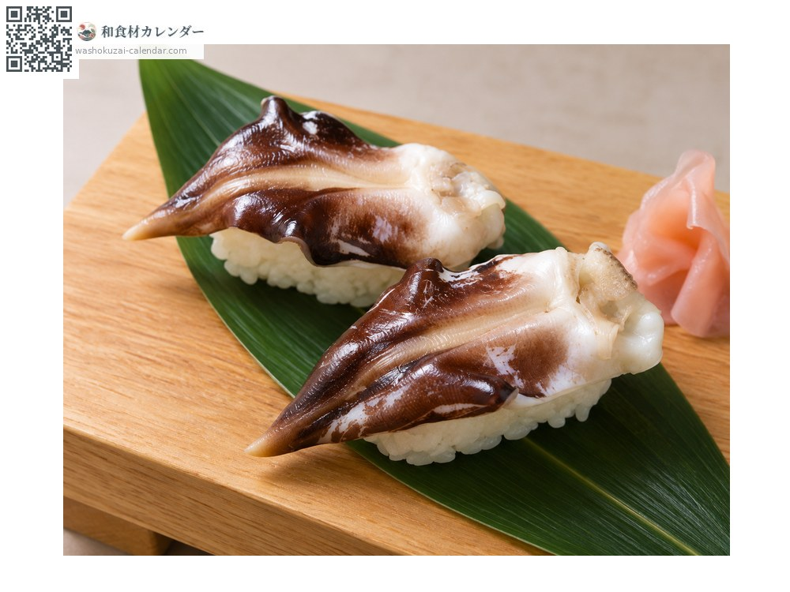
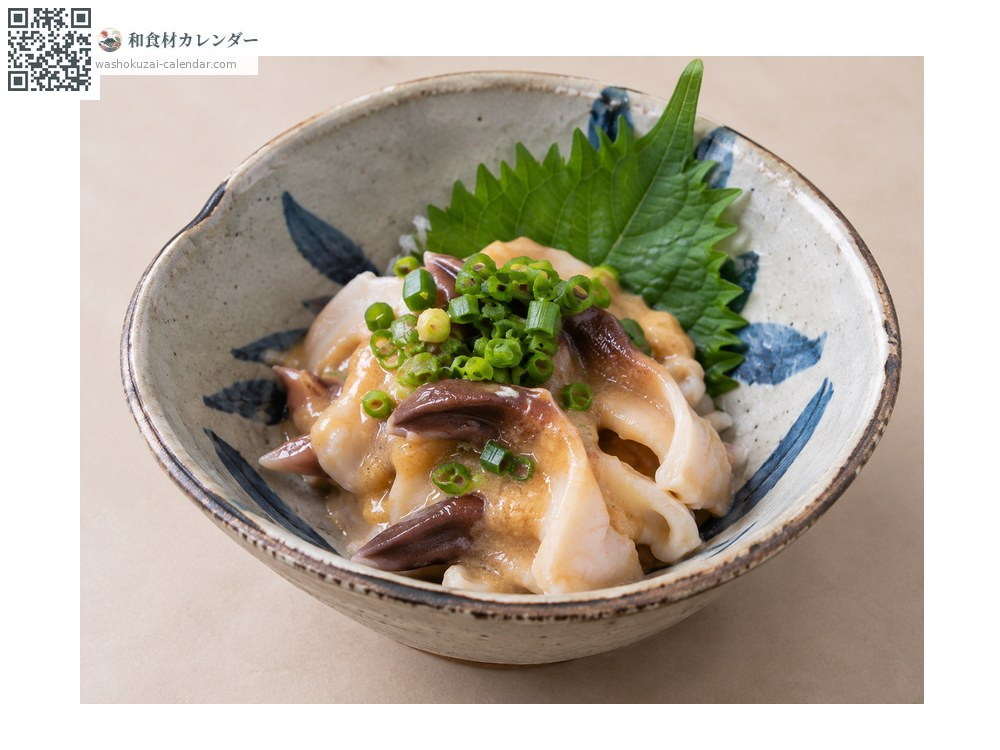

อาหารทะเล
หอยตริไก (หอยแครงญี่ปุ่น)
トリガイ とりがい torigai
ชื่ออื่นtorigai
อร่อยที่สุดในเดือน เม.ย., พ.ค., มิ.ย.

ช่วงที่อร่อยที่สุด
ม.ค.
ก.พ.
มี.ค.
เม.ย.
พ.ค.
มิ.ย.
ก.ค.
ส.ค.
ก.ย.
ต.ค.
พ.ย.
ธ.ค.
ช่วงอร่อยที่สุดมีจำหน่าย
วิธีปรุง

ซาชิมิ
ลวกน้ำร้อนเร็ว ๆ หวานจัดและมีสัมผัสเฉพาะตัว

ซูชิ
เป็นหน้าซูชิที่มีค่า ความเงาสีดำสวยงาม

นูตะ (คลุกมิโซะน้ำส้ม)
คลุกมิโซะน้ำส้ม ความหวานของหอยจะเด่นขึ้น
วิธีเลือก
ส่วนเท้าสีดำเป็นมันวาว ใหญ่และแน่น
วิธีเก็บรักษา
เสียเร็ว ลวกก่อนแล้วแช่เย็น ใช้ภายในวันนั้นหรือวันรุ่งขึ้น
แหล่งผลิตหลัก
เกร็ดน่ารู้
รูปร่างของเท้าคล้ายจะงอยปากนก จึงเป็นที่มาของชื่อ หอยตริไกจากทังโงะ เกียวโต เป็นแบรนด์เพาะเลี้ยงระดับสูงที่โตใหญ่กว่าหอยธรรมชาติ
วัตถุดิบที่อร่อยที่สุดในช่วงเดียวกัน
 ปลาอาจิ (ปลาทูแขกญี่ปุ่น)
ปลาอาจิ (ปลาทูแขกญี่ปุ่น) ปลาชิมะอาจิ (ปลาสำลีแถบเหลือง)
ปลาชิมะอาจิ (ปลาสำลีแถบเหลือง) ปลาอิวาชิ (ปลาซาร์ดีนญี่ปุ่น)
ปลาอิวาชิ (ปลาซาร์ดีนญี่ปุ่น) ปลาเฮอร์ริงแปซิฟิก
ปลาเฮอร์ริงแปซิฟิก ปลาเข็ม (ซาโยริ)
ปลาเข็ม (ซาโยริ) ปลาน้ำแข็ง (ชิราอุโอะ)
ปลาน้ำแข็ง (ชิราอุโอะ) ปลาคัมปาจิ (ปลาหางเหลืองครีบยาว)
ปลาคัมปาจิ (ปลาหางเหลืองครีบยาว) ปลาคัตสึโอะ (ปลาโอ)
ปลาคัตสึโอะ (ปลาโอ)